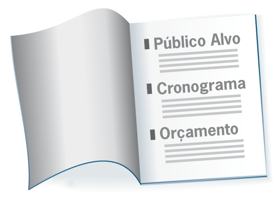

Maria e André, o Cronograma, o Orçamento, o Escopo…
Maria e André tinham começado um trabalho junto com as freiras que cuidavam de dependentes químicos na paróquia. Os dois eram psicólogos e queriam estabelecer um lugar para desintoxicação, grupos de atendimento e cuidado com os familiares.
Logo surgiu uma chamada de projetos por parte de um grande laboratório que tinha fábrica naquela cidade. André correu até lá e buscou um livrinho que pedia informações para quem buscava uma chance de receber aquela verba, que era muito boa.
Os dois se sentaram para responder as questões. Mas o que é escopo? Público alvo? Cronograma? Orçamento? Objetivo do projeto? Qual é a diferença entre projeto e programa???